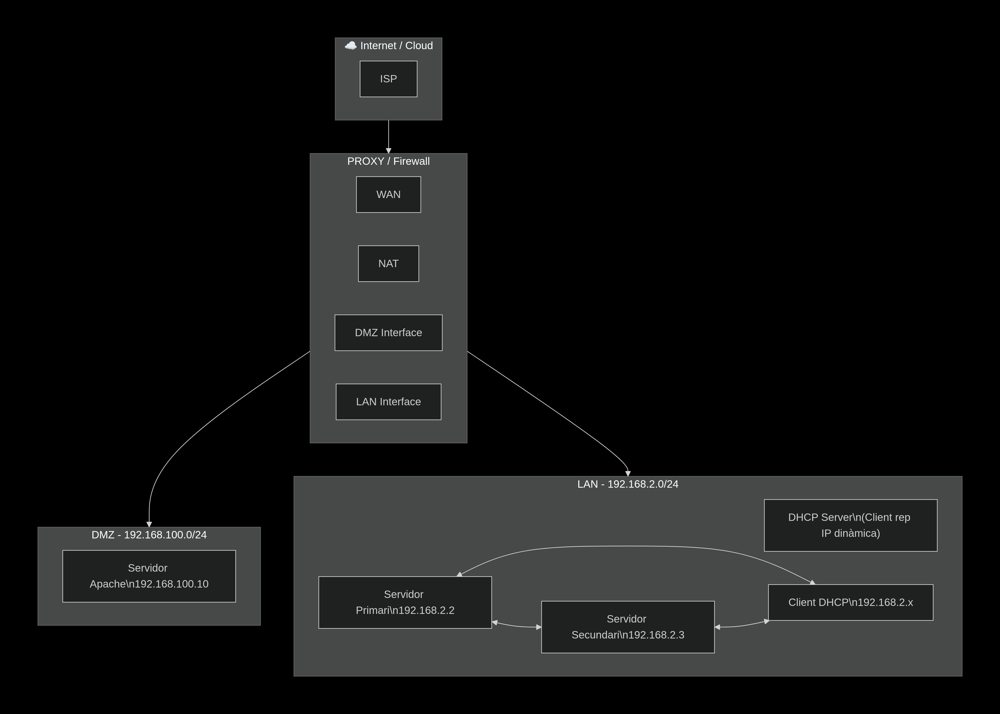

Introducció a la Pràctica de Servidors (RAID, DHCP, DNS)
En aquesta pràctica he desenvolupat i configurat una infraestructura completa de servidors en un entorn virtualitzat amb Ubuntu 24.04. L'objectiu principal ha estat implementar un sistema tolerant a fallades i altament disponible que inclou serveis de RAID, DHCP amb failover i DNS mestre-esclau.
RAID 1 (Mirall)
En primer lloc, he creat un RAID 1 per redundància de dades utilitzant dos discs de 13,2 GB (sdb i sdc). He particionat els discs amb fdisk, he instal·lat l'eina mdadm i he creat l'array /dev/md0 amb nivell RAID 1 (mirall). He formatat el dispositiu amb sistema de fitxers ext4 i l'he muntat a /srv/dades_servidors. Per demostrar la tolerància a fallades, he simulat la fallada d'un disc amb mdadm --fail, he comprovat que les dades es mantenien íntegres i he reconstruït l'array automàticament en substituir el disc defectuós amb mdadm --remove i mdadm --add.
DNS Mestre-Esclau
Seguidament, he configurat dos servidors DNS en mode mestre-esclau. El servidor primari (192.168.2.2) conté les zones directa i inversa del domini "informatica.com" al fitxer named.conf.local, mentre que el servidor secundari (192.168.2.3) actua com a esclau rebent les transferències de zona. He creat el fitxer de zona db.informatica.com amb els registres SOA, NS, A i SRV. He verificat la sintaxi amb named-checkconf i he comprovat la transferència de zona mitjançant els logs del sistema amb tail -f /var/log/syslog | grep named.
DHCP amb Failover
A continuació, he implementat un servei DHCP amb failover entre els dos servidors. He instal·lat isc-dhcp-server a les dues màquines i he configurat el fitxer /etc/dhcp/dhcpd.conf amb el peer "dhcp-failover". El servidor primari té el rol primary amb split 128, mentre que el secundari té el rol secondary. Tots dos comparteixen el mateix rang d'adreces (192.168.2.100 - 192.168.2.200) i la mateixa subxarxa 192.168.2.0/24. He especificat la interfície enp0s3 al fitxer /etc/default/isc-dhcp-server i he verificat l'estat dels serveis amb systemctl status.
Client DHCP
Finalment, he configurat un client Ubuntu per obtenir IP mitjançant DHCP. He alliberat l'adreça anterior amb dhclient -r i n'he sol·licitat una de nova amb dhclient -v, obtenint l'adreça 192.168.2.149. He verificat la connectivitat amb els dos servidors mitjançant ping i he confirmat que el servei DHCP amb failover funciona correctament, aportant alta disponibilitat a la infraestructura.
Esquema de Xarxa
Tota aquesta infraestructura està basada en l'esquema de xarxa que he dissenyat, amb una LAN (192.168.2.0/24) per als servidors i clients, i una DMZ (192.168.100.0/24) per al servidor Apache, separada per un firewall amb NAT per accedir a Internet.

Aqui mostro l'esquema de xarxa complet que hem dissenyat per a la pràctica del servidor. L'estructura parteix d'Internet cap a l'ISP, després travessa un PROXY/Firewall que fa funcions de NAT. D'aquest firewall surten dues interfícies: la interfície LAN amb la xarxa 192.168.2.0/24 i la interfície DMZ amb la xarxa 192.168.100.0/24. A la LAN hi connecto el Servidor Primari amb IP 192.168.2.2, el Servidor Secundari amb IP 192.168.2.3, i el Client DHCP que rep IP dinàmica dins del rang 192.168.2.x. A la DMZ hi connecto el Servidor Apache amb IP 192.168.100.10. Aquesta separació entre LAN i DMZ millora la seguretat de la infraestructura.

Aqui mostrem amb la comanda lsblk l'estructura de discs que utilitzarem per fer el RAID. Podem observar que el sistema té tres discs físics: sda de 25GB, sdb de 13,2GB i sdc de 13,2GB. El disc sda ja està particionat i conté el sistema operatiu muntat a la arrel /, mentre que sdb i sdc estan sense particionar ni muntar. Aquests dos discs seran els que utilitzarem per crear el RAID, ja que tenen la mateixa mida i estan en desús. També veiem diversos dispositius loop corresponents a snaps i un CD-ROM virtual amb les Guest Additions de VirtualBox, però aquests no ens afectaran per a la pràctica del RAID.

Aqui mostro com creo la partició al disc sdb utilitzant la comanda fdisk. Primer executo fdisk /dev/sdb i com que el disc no té taula de particions, en creo una de nova. Selecciono n per crear una partició nova, escullo tipus p (primària), numero 1 i accepto els valors per defecte per utilitzar tot l'espai disponible de 13,2 GB. Finalment, deso els canvis amb w i ja tinc la partició /dev/sdb1 preparada.

Aqui mostro el mateix procediment que abans però aplicat al disc sdc. Executo fdisk /dev/sdc, creo una partició nova amb n, selecciono partició primària p i assigno el número 1. Accepto els valors per defecte perquè la partició ocupi tot el disc de 13,2 GB. Deso els canvis amb w i obtinc la partició /dev/sdc1. Ja tinc els dos discs particionats iguals per crear el RAID.

Aqui mostro la verificació de les particions creades executant lsblk. Puc comprovar que els discs sdb i sdc tenen cadascun una partició (sdb1 i sdc1) de 13,2 GB. També veig el disc sda que conté el sistema operatiu amb la seva partició sda2 muntada a /, i el lector de CD-ROM sr0 amb les Guest Additions. Confirmo que els dos discs tenen la mateixa mida, requisit indispensable per al RAID 1.

Aqui mostro la instal·lació de l'eina mdadm que necessito per gestionar el RAID. Executo apt install mdadm i el sistema em mostra els paquets que s'instal·laran, incloent finalrd com a dependència. Confirmo la instal·lació prement S. Un cop finalitzat, el meu sistema ja disposa de les utilitats necessàries per crear i administrar arrays RAID.

Aqui mostro el final del procés d'instal·lació de mdadm. El sistema genera automàticament el fitxer mdadm.conf i actualitza el GRUB. També s'actualitza l'initramfs per preparar el sistema per reconèixer dispositius RAID a l'arrencada. El procés d'instal·lació es completa sense errors i el sistema està llest per crear el RAID.

Aqui mostro la creació del RAID 1 executant mdadm --create /dev/md0 --level=1 --raid-devices=2 /dev/sdb1 /dev/sdc1. El sistema m'adverteix que la metadata es troba al principi del disc i que pot no ser adequat com a dispositiu d'arrencada, però com que no faré servir aquest RAID per bootejar, confirmo amb y. El sistema crea l'array /dev/md0 i comença la sincronització inicial en segon pla.

Aqui mostro l'estat de la sincronització del RAID consultant el fitxer /proc/mdstat. Puc veure que el RAID md0 està actiu amb els dos dispositius sdb1 i sdc1 marcats com [UU], la qual cosa indica que tots dos estan sans. El progrés de resincronització és del 28,8% a una velocitat d'uns 210 MB/segon. Aquest fitxer m'ajuda a monitoritzar l'evolució del RAID en temps real.

Aqui mostro la creació del sistema de fitxers al dispositiu RAID. Un cop finalitzada la sincronització, executo mkfs.ext4 /dev/md0 per formatar el RAID amb sistema de fitxers ext4. El sistema em genera un UUID (427f18f9-1774-4f06-97c1-e39867926799) que identificarà aquest sistema de fitxers de manera única. El formatat es completa correctament.

Aqui mostro el muntatge del RAID al sistema de fitxers. Primer creo el punt de muntatge amb mkdir -p /srv/dades_servidors i després munto el dispositiu executant mount /dev/md0 /srv/dades_servidors. Un cop executades aquestes comandes, el RAID ja està accessible al directori /srv/dades_servidors i puc començar a desar-hi dades.

Aqui mostro la verificació de l'UUID del RAID utilitzant blkid /dev/md0. El sistema em retorna l'UUID 427f18f9-1774-4f06-97c1-e39867926799 que es va generar en el formatat. Aquesta informació la necessitaré més endavant per afegir el RAID a /etc/fstab i que es munti automàticament a l'arrencada del sistema.
 Modifiquem el fitxer fstab per a que el punt de montatge ens quedi permanent.
Modifiquem el fitxer fstab per a que el punt de montatge ens quedi permanent.

Aqui mostro la configuració persistent del RAID perquè es mantingui després de reiniciar el sistema. Executo mdadm --detail --scan per obtenir la línia de configuració i l'afegeixo al fitxer /etc/mdadm/mdadm.conf amb tee -a. Després actualitzo l'initramfs amb update-initramfs -u perquè el sistema pugui reconèixer i activar el RAID durant el procés d'arrencada.

Aqui mostro l'estat detallat del RAID un cop completada la configuració. Executo mdadm --detail /dev/md0 i puc veure que l'Estat és "clean", els dos dispositius actius són 2, i no hi ha dispositius fallits. Els discs sdb1 i sdc1 apareixen com a "active sync". També veig informació com la mida de l'array (13,21 GB) i el nivell RAID 1. Tot està funcionant correctament.

Aqui mostro la creació d'un fitxer de prova per verificar el funcionament del RAID. Executo echo "Prova integritat de dades" | sudo tee -a /srv/dades_servidors/test_raid.txt per crear un fitxer amb contingut de text. Després llisto el contingut del directori amb ls -l i confirmo que el fitxer s'ha creat correctament al RAID. Aquest fitxer em servirà per provar la tolerància a fallades.

Aqui mostro la simulació de la fallada d'un disc dins del RAID. Executo mdadm --manage /dev/md0 --fail /dev/sdb1 per marcar el disc sdb1 com a defectuós. El sistema accepta la comanda i el disc passa a estat "faulty". D'aquesta manera puc simular que un disc s'ha trencat i comprovar com es comporta el RAID 1 davant d'aquesta situació.

Aqui mostro la comprovació que les dades segueixen intactes després d'haver marcat un disc com a defectuós. Executo cat /srv/dades_servidors/test_raid.txt i puc llegir el contingut "Prova integritat de dades" sense cap problema. Això demostra que el RAID 1 continua funcionant en mode degradat i que les dades no s'han perdut tot i la fallada d'un disc.

Aqui mostro l'estat del RAID després de la fallada del disc. Executo mdadm --detail /dev/md0 i observo que l'Estat ara és "clean, degraded". Els dispositius actius són només 1 (sdc1), i el disc sdb1 apareix com a "faulty" i "removed". El RAID ha detectat la fallada correctament i continua operatiu en mode degradat, tal com s'espera d'un RAID 1.

Aqui mostro el progrés de la reconstrucció després d'afegir un disc nou. Un cop hem afegit de nou el disc sdb1, el sistema comença automàticament la reconstrucció. Consulto /proc/mdstat i veig que la recuperació està al 20,2% a una velocitat de 215 MB/segon. El disc sdb1 apareix com a "spare rebuilding" i la configuració és [2/1] [_U].

Aqui mostro com substitueixo el disc fallit. Primer elimino el disc defectuós de l'array amb mdadm --manage /dev/md0 --remove /dev/sdb1. Després afegeixo el disc de nou com a recanvi amb mdadm --manage /dev/md0 --add /dev/sdb1. El sistema accepta les dues comandes i immediatament comença el procés de reconstrucció del RAID.

Aqui mostro l'estat detallat del RAID durant el procés de reconstrucció. Executo mdadm --detail /dev/md0 i puc veure que l'Estat és "clean, degraded, recovering" amb un "Rebuild Status" del 54%. El disc sdb1 apareix com a "spare rebuilding" mentre que sdc1 segueix com a "active sync". La reconstrucció avança correctament.

Aqui mostro l'estat final de la reconstrucció del RAID. Consulto /proc/mdstat i veig que el RAID està completament recuperat amb la configuració [2/2] [UU]. No hi ha dispositius fallits i la reconstrucció ha finalitzat amb èxit. El sistema torna a tenir tota la redundància del RAID 1.

Aqui mostro la verificació final després de la reconstrucció completa. Executo mdadm --detail /dev/md0 i confirmo que l'Estat és "clean", els dispositius actius són 2, i no hi ha dispositius fallits. Els dos discs sdb1 i sdc1 estan marcats com a "active sync". La reconstrucció ha estat un èxit i el RAID 1 ha recuperat completament la redundància, tal com hem demostrat al llarg de tota la pràctica.

Aqui mostro el fitxer de configuració /etc/bind/named.conf.local del servidor DNS primari, però amb una IP incorrecta. Configuro les zones "informatica.com" i "2.168.192.in-addr.arpa" com a master, però poso l'adreça 192.168.1.11 com a servidor secundari enlloc de la 192.168.2.3 que correspon. Aquest error el detectaré i corregiré més endavant perquè la transferència de zona funcioni correctament.

Aqui mostro el fitxer /etc/bind/named.conf.local del servidor DNS primari ja corregit. Configuro la zona directa "informatica.com" com a master amb el fitxer /etc/bind/db.informatica.com, i li permeto la transferència al secundari amb allow-transfer { 192.168.2.3; } i l'avis amb also-notify { 192.168.2.3; }. Faig el mateix per a la zona inversa "2.168.192.in-addr.arpa" amb el fitxer db.192. Ara la configuració és correcta.

Aqui mostro el fitxer de zona directa /etc/bind/db.informatica.com que hem creat al servidor primari. Defineixo el $TTL de 604800 segons i el registre SOA amb el servidor ns1.informatica.com i l'admin. El número de sèrie el poso com a 2026040801 basat en la data. Configuro els registres NS per ns1 i ns2, els registres A per ns1 (192.168.2.2), ns2 (192.168.2.3) i per al domini principal. També afegeixo registres SRV per a serveis XMPP.

Aqui mostro la verificació de la sintaxi del fitxer de configuració de BIND. Executo sudo named-checkconf per comprovar que no hi ha errors de sintaxi als fitxers de configuració de BIND. La comanda no retorna cap missatge d'error, la qual cosa indica que la configuració és correcta. Aquest pas és important abans de reiniciar el servei per assegurar-me que no hi ha errors.

Aqui mostro el fitxer /etc/bind/named.conf.local del servidor DNS secundari. Configuro la zona "informatica.com" com a slave, indicant que el fitxer de zona es guardarà com a db.informatica.com i que el mestre és a l'adreça 192.168.2.2. D'aquesta manera, el servidor secundari rebrà una còpia de la zona des del primari mitjançant transferència de zona.

Aqui mostro l'estat del servei BIND9 al servidor secundari després de reiniciar-lo. Executo systemctl restart bind9 i després systemctl status bind9 per comprovar que el servei està actiu i funcionant correctament. El estat apareix com a "active (running)", la qual cosa confirma que el servidor DNS secundari està operatiu i preparat per rebre les transferències de zona des del primari.

Aqui mostro els logs del sistema per verificar que la transferència de zona s'ha realitzat correctament. Executo sudo tail -f /var/log/syslog | grep named i puc veure com el servidor secundari ha rebut la zona "informatica.com" des del primari 192.168.2.2. Els logs mostren "transfer started", "connected" i finalment "Transfer completed: success" amb 10 registres transferits. La transferència ha estat un èxit.

Aqui mostro la configuració de xarxa que faig al client Ubuntu. Vaig a la configuració de xarxa i selecciono el mètode IPv4 com a "Manual". Assigno l'adreça IP 192.168.2.10 amb màscara de xarxa 255.255.255.0, però deixo la puerta d'enllaç buida. Configuro els servidors DNS com a 192.168.2.2 i 192.168.2.3. Aquesta configuració manual em permetrà provar la resolució de noms

Aqui mostro el fitxer /etc/hosts del client que hem modificat temporalment. Afegeixo les entrades 192.168.2.2 informatica.com i 192.168.2.3 informatica.com per poder resoldre el domini mentre acabo de configurar el DNS. Això és una solució temporal per poder fer proves abans que la resolució DNS funcioni completament.
 Realitzem un ping al domini i veiem que s'executa correctament.
Realitzem un ping al domini i veiem que s'executa correctament.

Aqui mostro les proves de connectivitat que faig des del client. Primer intento fer ping a 192.168.2.2 però no tinc resposta perquè encara no hi ha connectivitat. Després faig ping a informatica.com i tinc resposta de 192.168.2.3 amb temps de 0,788 ms i 1,05 ms. El domini es resol correctament gràcies a l'entrada que hem posat al fitxer /etc/hosts. La pèrdua de paquets és del 0%.

Aqui mostro la instal·lació del servidor DHCP al servidor primari. Executo apt install isc-dhcp-server i el sistema em mostra que s'instal·laran els paquets isc-dhcp-common i isc-dhcp-server. La descàrrega és de 1.281 kB i s'utilitzaran 4.281 kB d'espai de disc. Confirmo la instal·lació prement s. Un cop instal·lat, podré configurar el servei DHCP.
 Establim la interficie de surtida en aquest cas enp0s3.
Establim la interficie de surtida en aquest cas enp0s3.

Aqui mostro el fitxer de configuració /etc/dhcp/dhcpd.conf del servidor DHCP primari. Configuro el failover amb el peer "dhcp-failover" indicant que sóc el primary amb adreça 192.168.2.2 i port 647, i el peer secundari a 192.168.2.3. Defineixo la subxarxa 192.168.2.0/24 amb els routers, DNS i domini. El pool té un rang de 192.168.2.100 a 192.168.2.200 amb el failover activat i un split de 128.

Aqui mostro l'estat del servei DHCP al servidor primari després de reiniciar-lo. Executo sudo systemctl restart isc-dhcp-server i després sudo systemctl status isc-dhcp-server. El servei apareix com a "active (running)" des de les 13:01:55. Els logs mostren que està escoltant a la interfície enp0s3 i que el servei s'ha iniciat correctament sense errors.

Aqui mostro la instal·lació del servidor DHCP al servidor secundari. Executo sudo apt update per actualitzar els repositoris i després sudo apt install isc-dhcp-server -y per instal·lar el paquet automàticament. Les descàrregues es realitzen correctament des dels repositoris d'Ubuntu. Un cop finalitzada la instal·lació, el servidor secundari tindrà el mateix programari que el primari.

Aqui mostro el fitxer /etc/default/isc-dhcp-server del servidor secundari on especifico per quines interfícies ha de servir el DHCP. Configuro INTERFACESv4="enp0s3" perquè el servidor DHCP escolti només a la interfície enp0s3. D'aquesta manera, el servei només respondrà peticions DHCP que arribin per aquesta interfície de xarxa.

Aqui mostro el fitxer /etc/dhcp/dhcpd.conf del servidor DHCP secundari. Configuro el failover indicant que sóc el secondary amb adreça 192.168.2.3 i port 647, i el peer primari a 192.168.2.2. Defineixo exactament la mateixa subxarxa que al primari, amb el mateix rang d'adreces 192.168.2.100 a 192.168.2.200. La configuració del pool inclou el failover però sense el split perquè el secundari no el necessita

Aqui mostro l'estat del servei DHCP al servidor secundari. Executo systemctl restart isc-dhcp-server i després sudo systemctl status isc-dhcp-server. El servei apareix com a "active (running)" des de les 13:07:32. Els logs mostren que està escoltant a la interfície enp0s3 i que el peer de failover s'ha iniciat correctament passant de l'estat "recover" a "normal".

Aqui mostro de nou l'estat del servei DHCP al servidor primari per confirmar que el failover està funcionant. Executo systemctl restart isc-dhcp-server i systemctl status isc-dhcp-server. Veig que el servei està "active (running)" i als logs observo el missatge "failover peer dhcp-failover: Both servers normal" indicant que tots dos servidors estan en estat normal i el failover funciona correctament.

Aqui mostro la configuració de xarxa del client canviant a mode DHCP. Vaig a la configuració de xarxa i selecciono el mètode IPv4 com a "Automàtic (DHCP)". Configuro els servidors DNS com a 192.168.2.2, 192.168.2.3. D'aquesta manera, el client obtindrà l'adreça IP automàticament mitjançant DHCP, ja sigui del servidor primari o del secundari gràcies al failover.

Aqui mostro la configuració de xarxa del client abans d'obtenir una adreça per DHCP. Executo ip a i veig que la interfície enp0s3 té una adreça IP 192.168.2.150/24 que havia assignada manualment anteriorment. La validació de la llicència és de 597 segons. Ara procediré a alliberar aquesta adreça i obtenir-ne una de nova mitjançant DHCP.

Aqui mostro les proves de connectivitat que faig des del client. Faig ping a 192.168.2.2 i tinc resposta amb temps de 0,816 ms. Després faig ping a 192.168.2.3 i també tinc resposta amb temps d'1,72 ms. La connectivitat amb els dos servidors és correcta i la pèrdua de paquets és del 0%. Això confirma que el client pot comunicar-se amb tots dos servidors.

Aqui mostro com allibero l'adreça IP actual i en demano una de nova via DHCP. Primer executo sudo dhclient -r per alliberar l'adreça existent i matar el procés client antic. Després executo sudo dhclient -v per sol·licitar una nova adreça en mode verbose. El servidor m'ofereix l'adreça 192.168.2.149 des del servidor 192.168.2.3 i finalment quedo vinculat a aquesta adreça.

Aqui mostro la configuració final del client després d'obtenir l'adreça per DHCP. Executo ip a i veig que la interfície enp0s3 té l'adreça 192.168.2.149/24 obtinguda dinàmicament del servidor DHCP. La llicència té una validesa de 563 segons i el servidor DNS és 192.168.2.3 que ha assignat el DHCP. Tot el sistema de DHCP amb failover funciona correctament.